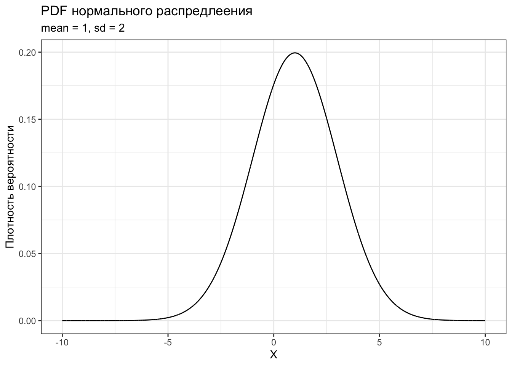
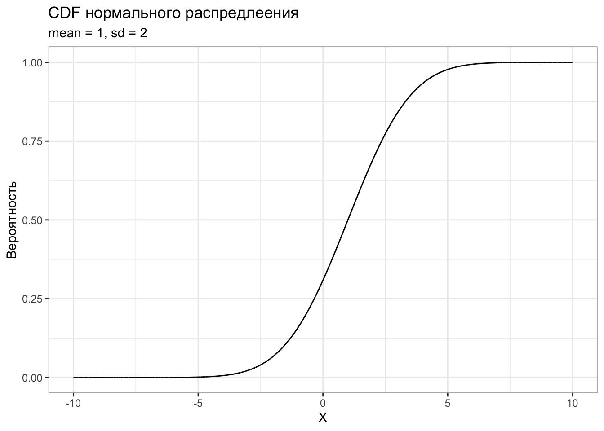
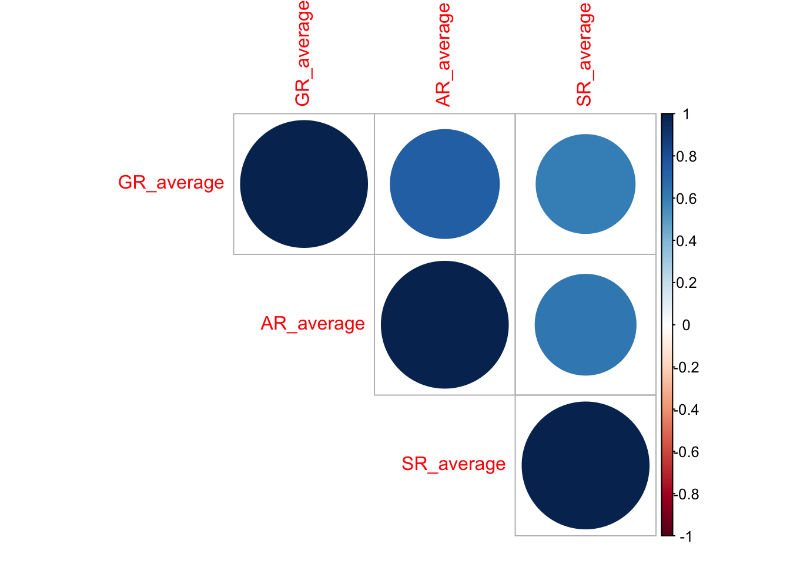
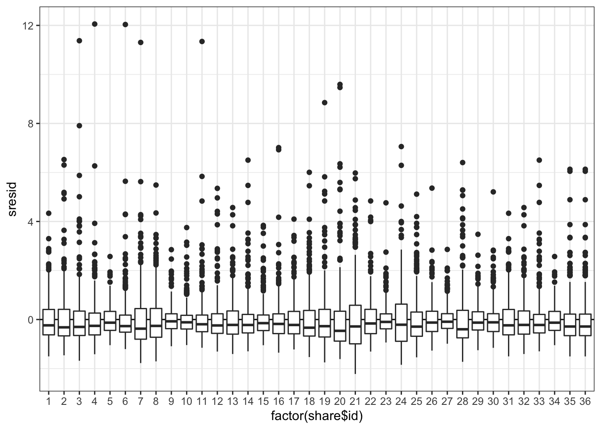
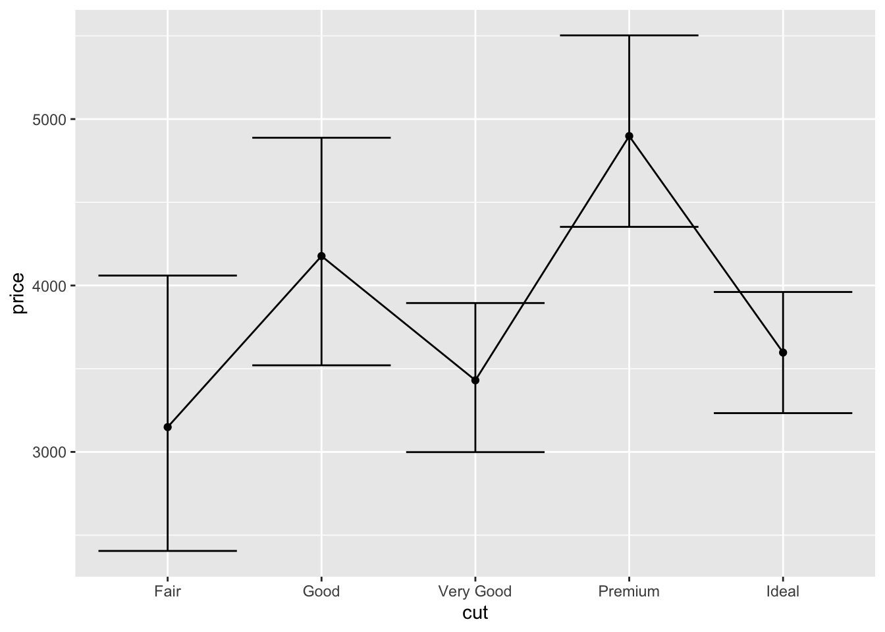
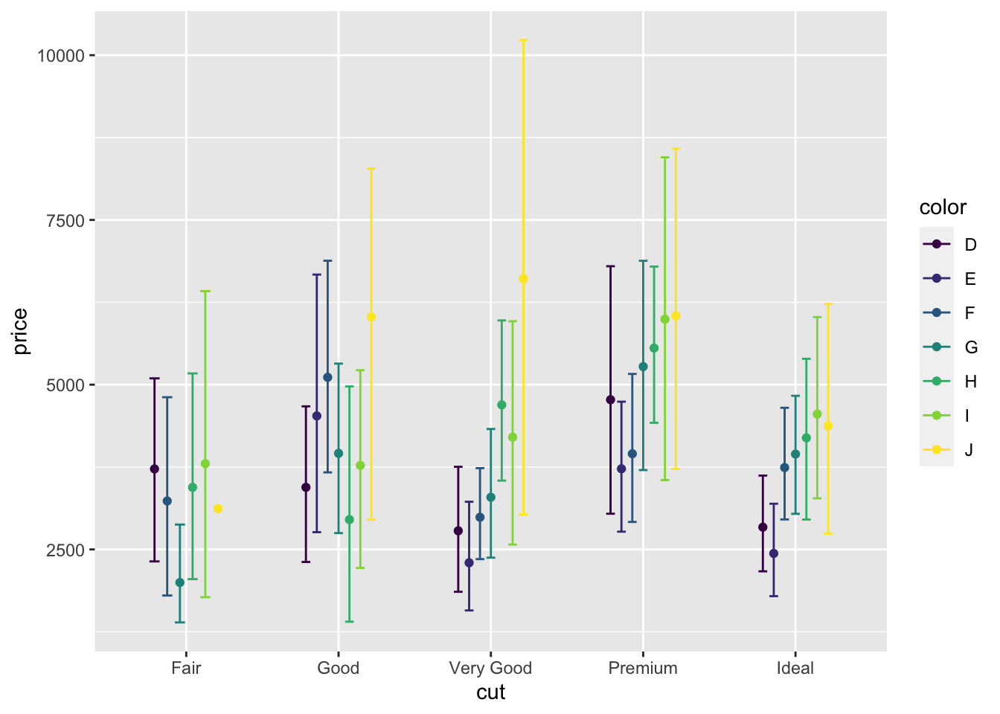
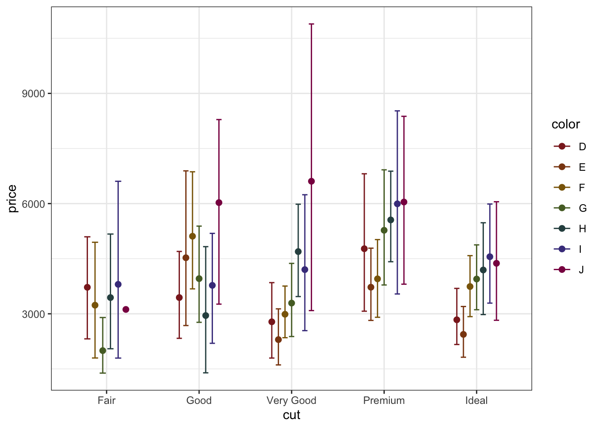
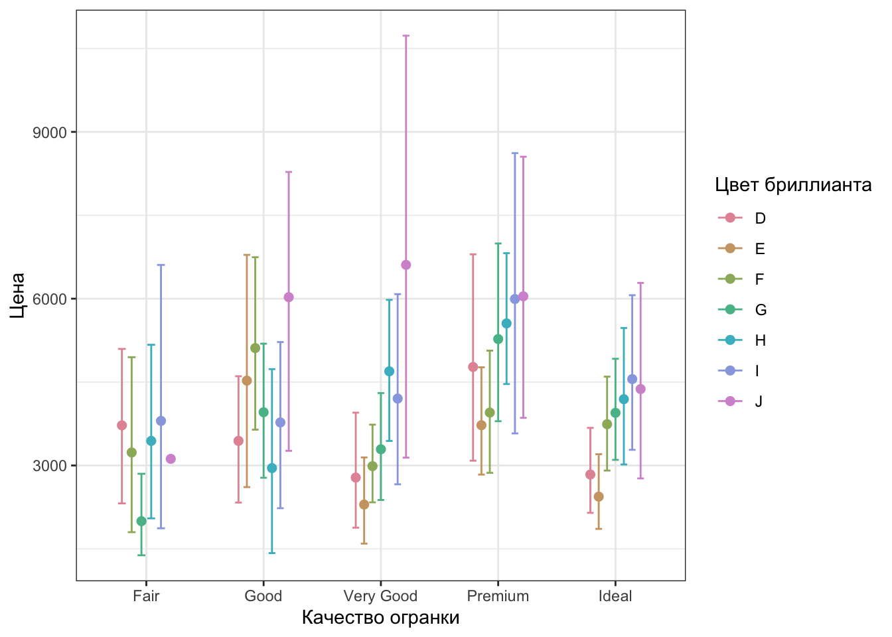

8 Визуализация данных
8.1 Философия ggplot2 (A Layered Grammar of Graphics)
Идея, воплолщенная в ggplot2, восходит к работе L. Wilkinson «The Grammar of Graphics». Базируясь на идеях, изложенных в этой работе, Hadley Wickham разработал концепцию Layered Grammar of Graphics и создал мощный пакет для визуализации, ради которого мы все здесь собрались. Автором по этому пакету написана целая книга, но мы сосредоточимся на основных смысловых и ключевых моментах, которые необходимы, чтобы сделать что-то крутое.
Часто возникает вопрос: почему 2? Ответ примерно такой: был и первый ggplot, но попытка не задалась от слова совсем, и пришлось все переделать.
8.1.1 Собственно к философии построения графиков
По своей сути график представляет собой сложную аппликацию из нескольких слоев. На каждом слое располагаются сходные по содержанию элементы. Начиная с самого первого — базового — и постепенно добавляя слой за слоем необходимые элементы, можно создавать сложные визуализации для отображения интересных закономерностей в данных.
После создания базового графика осуществляется настройка отдельных элементов по необходимости и в зависимости от требований издательства / преподавателя / научника / комиссии и т.д. И поскольку все элементы в определенной степени изолированы друг от друга, это открывает большие возможности кастомизации. Кроме того, чтобы оформить график в соответствии с конкретными требованиями, нет необходимости перерисовывать его целиком, так как содержательная часть графика независима от настроек внешнего облика. Все, что вам нужно — это добавить/удалить пару строк кода.
Но — хватит слов! Поехали уже рисовать уже!
8.2 Данные
Работать мы продолжаем в пакете tidyverse, частью которого, собственно, и является ggplot2. Соответственно, если мы подключаем tidyverse, то и ggplot2 подключается автоматически.
## ── Attaching packages ─────────────────────────────────────── tidyverse 1.3.0 ──## ✓ ggplot2 3.3.2 ✓ purrr 0.3.4
## ✓ tibble 3.0.4 ✓ dplyr 1.0.2
## ✓ tidyr 1.1.2 ✓ stringr 1.4.0
## ✓ readr 1.4.0 ✓ forcats 0.5.0## ── Conflicts ────────────────────────────────────────── tidyverse_conflicts() ──
## x dplyr::filter() masks stats::filter()
## x dplyr::lag() masks stats::lag()Подгружаем данные. Ну, как подгружаем, просто используем встроенный датасет про бриллианты:
## # A tibble: 53,940 x 10
## carat cut color clarity depth table price x y z
## <dbl> <ord> <ord> <ord> <dbl> <dbl> <int> <dbl> <dbl> <dbl>
## 1 0.23 Ideal E SI2 61.5 55 326 3.95 3.98 2.43
## 2 0.21 Premium E SI1 59.8 61 326 3.89 3.84 2.31
## 3 0.23 Good E VS1 56.9 65 327 4.05 4.07 2.31
## 4 0.290 Premium I VS2 62.4 58 334 4.2 4.23 2.63
## 5 0.31 Good J SI2 63.3 58 335 4.34 4.35 2.75
## 6 0.24 Very Good J VVS2 62.8 57 336 3.94 3.96 2.48
## 7 0.24 Very Good I VVS1 62.3 57 336 3.95 3.98 2.47
## 8 0.26 Very Good H SI1 61.9 55 337 4.07 4.11 2.53
## 9 0.22 Fair E VS2 65.1 61 337 3.87 3.78 2.49
## 10 0.23 Very Good H VS1 59.4 61 338 4 4.05 2.39
## # … with 53,930 more rowsСмотрим структуру:
## tibble [53,940 × 10] (S3: tbl_df/tbl/data.frame)
## $ carat : num [1:53940] 0.23 0.21 0.23 0.29 0.31 0.24 0.24 0.26 0.22 0.23 ...
## $ cut : Ord.factor w/ 5 levels "Fair"<"Good"<..: 5 4 2 4 2 3 3 3 1 3 ...
## $ color : Ord.factor w/ 7 levels "D"<"E"<"F"<"G"<..: 2 2 2 6 7 7 6 5 2 5 ...
## $ clarity: Ord.factor w/ 8 levels "I1"<"SI2"<"SI1"<..: 2 3 5 4 2 6 7 3 4 5 ...
## $ depth : num [1:53940] 61.5 59.8 56.9 62.4 63.3 62.8 62.3 61.9 65.1 59.4 ...
## $ table : num [1:53940] 55 61 65 58 58 57 57 55 61 61 ...
## $ price : int [1:53940] 326 326 327 334 335 336 336 337 337 338 ...
## $ x : num [1:53940] 3.95 3.89 4.05 4.2 4.34 3.94 3.95 4.07 3.87 4 ...
## $ y : num [1:53940] 3.98 3.84 4.07 4.23 4.35 3.96 3.98 4.11 3.78 4.05 ...
## $ z : num [1:53940] 2.43 2.31 2.31 2.63 2.75 2.48 2.47 2.53 2.49 2.39 ...Тут есть описание.
Но этот датасет очень большой 53k наблюдений. Нам для освоения возможностей визуализации пока этого многовато. Давайте сделает случайную подвыборку из 1000 наблюдений:
8.3 Строим базовый график
8.3.1 Базовый слой
Первое, что мы делаем, когда собираемся что-либо рисовать — берем холст.
Аналогично, когда мы собираем рисовать график с использованием ggplot2, первое, что мы делаем — говорим «Дай мне холст!». На языке ggplot2 это делается с помощью команды ggplot().

И, о Боже, ggplot2 дал нам холст! Иначе говоря, мы построили базовый слой, на который в дальнейшем будем набрасывать элементы нашего графика.
Следующее, что необходимо сделать — указать данные, на основе которых мы будем строить наш график. Это делается к помощью аргумента data:

Вроде бы ничего не изменилось, да и собственно, не должно было, ведь мы никак не указали, что мы хотим отобразить. Давайте укажем.
8.3.2 Разметка осей и переменные
Важнейшие элементы любого графика — это оси. Мы строим двумерные графики, поэтому и оси у нас две — как учили в школе, x (горизонтальная ось, ось абсцисс) и y (вертикальная ось, ось ординат).
Чтобы задать оси графика потребуется отдельная функция. Она называется aes(), и в общем задает эстетики графика.
8.3.2.1 Эстетики
Итак, конкретнее об эстетиках. Иначе говоря, это то форматирование, которое связано с данными. Или еще один способ понимания — способы отображения переменных из датасета. У функции aes() есть ряд параметров, они тоже называются эстетики.
Вот список эстетик, которые используются чаще всего:
xycolorfillshapesizelinetype
Несложно догадаться, что переменные по осям задаются параметрами x и y. Что ж, зададим.
Давайте визуализируем связь между длиной и шириной бриллианта.

Так, ну, допустим… Оси разметились. А где картинка?
Картинки нет, но ggplot2 честно отработал свою работу. Мы задали только оси — и он нам разметил их в соответствии с имеющимися в векторах значениях. Больше мы ему ничего не написали. Чтобы всё-таки получить картинку, необходимо указать, как мы хотим отборазим наши переменные.
8.3.3 Геомы
За то, каким образом будут отображены переменными, а конкретно, какими «геометрическими объектами», отвечает семество функций geom_*. Когда мы переходим к этой функции, мы переходим на новый слой. Чтобы это обозначить используется плюсик +.

Мы выбрали точки для отображения наблюдений, потому что наиболее наглядный вариант отобразить зависимость между двумя переменными. Такой тип графика называется scatterplot, или диаграмма рассеяния.
Но, вообще-то, можно и получше отобразить закономерность. Как минимум, добавить линию тренда в помощью специального геома:
## `geom_smooth()` using method = 'gam' and formula 'y ~ s(x, bs = "cs")'
Как видите, при добавлении нового «геометрического» способа отображения данных мы добавляем новый слой.
Сейчас мы точно видим, что тренд линейный. geom_smooth() подразумевает «сглаживание», оно может происходить с помощью разных методов (используемый метод нам написали в консоль). Мы можем эскплицинто указать метод, который хотим использовать. Например, линейную регрессию:
## `geom_smooth()` using formula 'y ~ x'Картинка не то чтобы хоть как-то изменилась, но так бывает далеко не всегда, и мы столкнемся с такими примерами.
8.4 Группировка по переменной
Чаще всего в практике нас интересует связь между переменными не по всему датасету, а различие в связи между группами. Чтобы посмотреть, что есть интересного, давайте разобьем наши наблюдения на группы по качеству огранки.
Вспомним об эстетиках. Предположим, мы хотим отобразить на графике группы по качеству огранки с помощью цвета. Для этого есть эстетика color, которой необходимо указать переменную, по которой мы будем группировать.
ggplot(data = diamonds1000, aes(x = x,
y = y,
color = cut)) +
geom_point() +
geom_smooth(method = 'lm')## `geom_smooth()` using formula 'y ~ x'
Теперь мы наблюдаем, что, оказывается, обнаруженная нами линейная закономерность сохрнается во всех группах вне зависимости от качества огранки. Но наблюдений у нас все ещё много — все смешивается, точки наклыдваются друг на друга, ничего не разобрать. Попробуем это поправить с помощью аргумента, задающего прозрачность (alpha):
ggplot(data = diamonds1000,
aes(x = x,
y = y,
color = cut)) +
geom_point(alpha = .3) +
geom_smooth(method = 'lm')## `geom_smooth()` using formula 'y ~ x'
Это не сильно помогло, потому что точек там охренеть как сколько, но как прицнипиальный способ борьбы с «непонятностью» может хорошо работать. В данном случае линии тренда как бы вышли на передний план.
Для группировки можно задать и другую эстетику, например форму точек:
ggplot(data = diamonds1000,
aes(x = x,
y = y,
shape = cut)) +
geom_point(alpha = .3) +
geom_smooth(method = 'lm')## Warning: Using shapes for an ordinal variable is not advised## `geom_smooth()` using formula 'y ~ x'
В данный пример показывает, что не любые способы задания эстетик одинаково хороши. В частности здесь мы потеряли часть информацтивности графика — теперь мы не можем понять, какая линия тренда какой группе наблюдений соответствует — хотя это можно поправить — но что более важно, даже R нам говорит, что использовать эстетику формы не рекомендуется для нашей переменной. Причина в том, что у нас много категорий, и наш график теряет удобочитаемость.

Как можно пофиксить тот факт, что линии тренда теперь выглядят одинаково для всех групп?
8.5 Графики со встроенной статистической обработкой
Часто бывает так, что мы хотим отобразить не сырые данные, а какие-то посчитанные статистики. Поэтому необходимо сначала предобработать данные, получить необходимые значения и затем на их основе построить график.
Но зачем? Если можно сразу в коде построения графика рассчитать все, что нам нужно! В ggplot2 уже встроены инструменты простейшей статистический обработки!
Еще раз посмотрим на датасет. У нас есть переменная price, а также категории качества огранки cut. Наверняка, средняя цена будет различаться в этих категориях. Давайте это проверим! Но сначала нам необходимо познакомиться с новым семейством функций stat_*.
8.5.1 Статы (stat_)
Статы и есть те самые встроенные инструенты статистической обработки. Они позволяют прямо в коде графика обсчитать данные и сразу же визуализировать результаты.
На самом деле, мы уже сталкивались со встроенными инструментами статистической обработки, ведь что делает
geom_smooth(method = 'lm')? Не что иное, как визуализирует линейную регрессию, построенную на выбранных данных!
Наиболее популярная функция из рассматриваемого семейста — stat_summary(). С помощью неё мы и будем визуализировать наши средние.
Для начала посмотрим, как у нас написана переменная, по которой мы собоиаремся группировать налюдения:
## Ord.factor w/ 5 levels "Fair"<"Good"<..: 3 5 4 3 4 3 4 3 5 3 ...Видим, что это вектор типа ordered factor, содержащий пять уровней. Для нас это оч хор, так как мы без лишних заморочек сразу можем её использовать.
Теперь можем приступить к построению графика. Начнем с базового слоя:
ggplot(diamonds1000,
aes(cut, price)) # напоминаю, что аргументы функции можно передавать просто по порядку, не указывая имя самого аргумента
Взяли холст, расчертили. По оси x у нас будет идти факторная переменная. Теперь добавим средние. Как и полагается, на новый слой.
Разберемся, что тут написано. Первый аргумент (fun) принимает функцию, результат которой будет отложен по оси y. В нашем случае это среднее (mean). Она будет применена к переменой price, причем наблюдения будут автоматически сгруппированы по интересующим нас группам (cut). Второй аргумент — это уже знакомый нам geom, которые отвечает за то, как «геометрически» будут отрисованы знаечния на графике. Наш выбор — точки. Как результат мы наблюдаем то, что хотели.
Однако как мы (у)знаем из статистики, чтобы определить, есть ли различия между группами, нам недостаточно только средних значений — необходимы доверительные интервалы. Что ж, отобразим и их.
Добавим новый слой с помощью всё той же функции stat_summary, но на этот раз она будет выглядеть немного по-другому:
ggplot(diamonds1000,
aes(cut, price)) +
stat_summary(fun = mean, geom = 'point') +
stat_summary(fun.data = mean_cl_boot, geom = 'errorbar')
Как мы видим, немного изменился первый аргумент. Это связано с изменением геома. Для отображения доверительных интервалов нам нужен геом errorbar, который требует не одно значение, а два — верхнюю и нижнюю границу доверительного интервала. То есть fun.data принимает как аргумент мини-датафрейм — как раз в таком формате и возвращается результат функции mean_cl_boot. Можно посмотреть на её работу отдельно:
## y ymin ymax
## 1 3905.654 3668.714 4165.587Собственно, вот он датафрейм из одной строки. Здесь три значения, но errorbar игронирует первое (само среднее значение) и использует только второе и третье, строя по ним «усы».
Собственно, график почти готов. Можно добавить линии, которые будут соединять наши средние. Вообще в данном случае это будет лишнее, так как линии отображают зависимость измерений (связанные выборки или повторные измерения). В нашем случае все наблюдения независимы, но чтобы попрактиковаться, мы их всё же нарисуем. Но ещё раз говорю — будьте с ними аккуратны!
ggplot(diamonds1000,
aes(cut, price)) +
stat_summary(fun = mean, geom = 'point') +
stat_summary(fun.data = mean_cl_boot, geom = 'errorbar') +
stat_summary(fun = mean, geom = 'line')## geom_path: Each group consists of only one observation. Do you need to adjust
## the group aesthetic?
Ага, вроде слой добавили, но ничего не изменилось. Еще и message вылетел. Надо почитать!
ggplot2 на говорит, что каждая группа у нас содержит одно наблюдение — и он категорически прав, ведь у нас в каждой группе отображается только среднее значение. Из-за этого он не понимает, как ему нужно соединять точки. Надо ему подсказать, что с точки зрения соединения точек у нас всего одна группа, так как мы хотим, чтобы наши среднии были последовательно соединены. Так и запишем (используя аргумент group):
ggplot(diamonds1000,
aes(cut, price,
group = 1)) +
stat_summary(fun = mean, geom = 'point') +
stat_summary(fun.data = mean_cl_boot, geom = 'errorbar') +
stat_summary(fun = mean, geom = 'line')
Вот такой у нас классный забор получился!
8.6 Ищем более сложные закономерности
Но это мы только часть информации из данных вытащили. Наверняка на цену камня влияет не только качество его огранки. Например, посмотрим на переменную color:
## Ord.factor w/ 7 levels "D"<"E"<"F"<"G"<..: 1 2 3 3 3 3 2 2 5 5 ...Это тоже упорядоченный фактор, и, судя по описанию, есть «более хорошие» цвета и «более плохие». Значит логично предположить, что эта переменная на цену будет каким-то образом влиять, и надо бы её тоже отобразить.
Воспользуемся тем, что уже знаем. Добавим новую эстетику:
ggplot(diamonds1000,
aes(cut, price,
color = color)) + # не путайтесь: первый color --- название аргумента, второй --- имя переменной)
# тут ещё была группировка, мы её убрали, чтобы не сойти с ума
stat_summary(fun = mean, geom = 'point') +
stat_summary(fun.data = mean_cl_boot, geom = 'errorbar') # а тут были линии, мы их тоже убрали, так как нет группировкиЁжкины коты, красота-то какая! Только надо как-то это в божеский вид привести…
8.7 Настраиваем график
Как упоминалось выше, ggplot2 имеет широчайшие возможности кастомизации, в нем можно настроить чуть более, чем всё. Сейчас наш график выглядит хотя и содержательно верно, но с точки зрения дизайна (да и общей адекватности) — совершенно дико. Давайте подправим.
Первое, что бросается в глаза — точки и «усы» лежат друг на друге, что очень нехорошо и так не надо: крайне трудно понять, что происходит на графике. Давайте их расположим рядом друг с другом, чтобы оставалось видно, что средние сгрупированы по делениям оси x.
Это делается с помощью функции position_dodge(), которая создает объект задающий позицию точек. Результат её работы необходимо передать в аргумент position конкретного стата, но так как у нас статов несколько, прописывать 100500 раз одно и то же — неразумно. К тому же, если мы захотим как-то поменять расположение точек (сблизить, раздвинуть сильнее), нам надо будет переписывать каждую строку — всё ещё неразумно. Поэтому мы сделаем отдельный объект, в который рапишем результат работы функции:
И далее будем использовать этот объект:
ggplot(diamonds1000,
aes(cut, price,
color = color)) +
stat_summary(fun = mean, geom = 'point',
position = pd) +
stat_summary(fun.data = mean_cl_boot, geom = 'errorbar',
position = pd)
Ну, вот стало уже поприличней.
Второе, что бросается в глаза — слишком широкие errorbar’ы (они касаются усов соседних точек). Значит, надо уменьшить ширину. За их ширину отвечает параметр width. Ширина задается долями единицы.
ggplot(diamonds1000,
aes(cut, price,
color = color)) +
stat_summary(fun = mean, geom = 'point',
position = pd) +
stat_summary(fun.data = mean_cl_boot, geom = 'errorbar',
position = pd, width = .4)Вот так вроде хорошо, хвосты errorbar’ов ни с чем не пересекаются.
Что ты еще хотелось подправить? Наверное, сделать акцент на главных смысловых элементах графика. В нашем случае это точки. Давайте сделаем их побольше.
ggplot(diamonds1000,
aes(cut, price,
color = color)) +
stat_summary(fun = mean, geom = 'point',
position = pd, size = 2) +
stat_summary(fun.data = mean_cl_boot, geom = 'errorbar',
position = pd, width = .4)Вот теперь кайф!
8.7.1 Темы
Но не совсем. Фон какой-то не очень… Дефолтная серая тема в какое-то давнее время была популярна, все выдели что ты крутой и умеешь в ггплот и ваще. Однако со временем это стало #немодно, и лучше серой темы избегать, да и требования журналов обычно более строгие.
В ggplot2 есть ряд встроенных тем, которые задаются через функции семейства theme_*(). Наиболее популярные theme_classic() и theme_bw(). Последнюю мы и будем использовать.
ggplot(diamonds1000,
aes(cut, price,
color = color)) +
stat_summary(fun = mean, geom = 'point',
position = pd, size = 2) +
stat_summary(fun.data = mean_cl_boot, geom = 'errorbar',
position = pd, width = .4) +
theme_bw()
Ах, красота!
8.7.2 Кастомизация шкал (scale_)
Мы задали отображение групп цвета бриллиантов цветом1, но дефолтная шкала не совсем хороша, как минимум потому, что в ней есть жёлтый, который на нашем белом фоне будет смотреться не очень. Надо бы это поправить.
Для того, чтобы кастомизировать используемые шкалы, есть ряд функций семейства scale_*(). Мы познакомимся с некоторыми из них. Для начала изменим цвета.
В R можно задавать цвета через названия или HEX кодировку. Будем использовать названия.
ggplot(diamonds1000,
aes(cut, price,
color = color)) +
stat_summary(fun = mean, geom = 'point',
position = pd, size = 2) +
stat_summary(fun.data = mean_cl_boot, geom = 'errorbar',
position = pd, width = .4) +
theme_bw() +
scale_color_manual(values = c('brown4', 'chocolate4', 'darkgoldenrod4', 'darkolivegreen', 'darkslategray', 'darkslateblue', 'deeppink4'))Здесь мы используем функцию scale_color_manual(), чтобы задать значения цвета вручную. Используя обязательный аргумент values мы передаем вектор названий цветов, которые хотим использовать. Не то чтобы идеал, но и мы не дизайнеры.
Так-то есть готовые палитры, и чё мы тут заморачивались подбирая цвета — не оч понятно:
ggplot(diamonds1000,
aes(cut, price,
color = color)) +
stat_summary(fun = mean, geom = 'point',
position = pd, size = 2) +
stat_summary(fun.data = mean_cl_boot, geom = 'errorbar',
position = pd, width = .4) +
theme_bw() +
scale_color_manual(values = colorspace::rainbow_hcl(length(unique(diamonds$color))))Вуаля! Приятно. Нежно. Красuво.
8.7.3 Последние штрихи
Но настройка графика на этом не закончена. Раз уж мы в России, то надо и подписи по-русски задать. Для этого также есть отдельная функция. Она называется labs(). Зададим названия осей:
ggplot(diamonds1000,
aes(cut, price,
color = color)) +
stat_summary(fun = mean, geom = 'point',
position = pd, size = 2) +
stat_summary(fun.data = mean_cl_boot, geom = 'errorbar',
position = pd, width = .4) +
theme_bw() +
scale_color_manual(values = colorspace::rainbow_hcl(length(unique(diamonds$color)))) +
labs(x = "Качество огранки", y = "Цена")
Стало получше, но еще остались эстетика, которая подписана названием переменной из датасета — цвет. Это легко поправить.
ggplot(diamonds1000,
aes(cut, price,
color = color)) +
stat_summary(fun = mean, geom = 'point',
position = pd, size = 2) +
stat_summary(fun.data = mean_cl_boot, geom = 'errorbar',
position = pd, width = .4) +
theme_bw() +
scale_color_manual(values = colorspace::rainbow_hcl(length(unique(diamonds$color)))) +
labs(x = "Качество огранки", y = "Цена",
color = "Цвет бриллианта")Теперь было бы хорошо добавить название, а то как-то непонятно, что тут вообще нарисовано. Используем аргументы title и subtitle функции labs().
ggplot(diamonds1000,
aes(cut, price,
color = color)) +
stat_summary(fun = mean, geom = 'point',
position = pd, size = 2) +
stat_summary(fun.data = mean_cl_boot, geom = 'errorbar',
position = pd, width = .4) +
theme_bw() +
scale_color_manual(values = colorspace::rainbow_hcl(length(unique(diamonds$color)))) +
labs(x = "Качество огранки", y = "Цена",
color = "Цвет бриллианта",
title = "Зависимость цены бриллианта от его характеристик",
subtitle = "Цвет и качество огранки")Почти идеально! Но осталось пара моментов. Во-первых, непонятно, какая метрика отображена с помощью «усов», а во-вторых, легенда занимает много места. У labs() есть ещё один аргумент — caption, иначе говоря «подпись». В ней и можно указать метрику.
ggplot(diamonds1000,
aes(cut, price,
color = color)) +
stat_summary(fun = mean, geom = 'point',
position = pd, size = 2) +
stat_summary(fun.data = mean_cl_boot, geom = 'errorbar',
position = pd, width = .4) +
theme_bw() +
scale_color_manual(values = colorspace::rainbow_hcl(length(unique(diamonds$color)))) +
labs(x = "Качество огранки", y = "Цена",
color = "Цвет бриллианта",
title = "Зависимость цены бриллианта от его характеристик",
subtitle = "Цвет и качество огранки",
caption = "отображён 95%-доверительный интервал")
Осталось подвинуть легенду, например, вниз. Вообще положение легенды определяется темой, и мы её ужа задали. Однако можно и подправить дефолтные параметры с помощью функции theme().
ggplot(diamonds1000,
aes(cut, price,
color = color)) +
stat_summary(fun = mean, geom = 'point',
position = pd, size = 2) +
stat_summary(fun.data = mean_cl_boot, geom = 'errorbar',
position = pd, width = .4) +
theme_bw() +
scale_color_manual(values = colorspace::rainbow_hcl(length(unique(diamonds$color)))) +
labs(x = "Качество огранки", y = "Цена",
color = "Цвет бриллианта",
title = "Зависимость цены бриллианта от его характеристик",
subtitle = "Цвет и качество огранки",
caption = "отображён 95%-доверительный интервал") +
theme(legend.position = 'bottom')
Ну, вот — наконец-то мы получили итоговый варинат, который и опубликовать можно, и на презентации показать и вообще хоть куда!
8.8 Больше переменных
Но… Давайте ещё? Добавим переменных? Которые могут влиять на цену нашего бриллианта?
У нас в данных есть переменная clarity, которая есть категория чистоты бриллианта:
## Ord.factor w/ 8 levels "I1"<"SI2"<"SI1"<..: 3 4 3 7 3 3 4 4 2 7 ...Снова упорядоченный фактор, восемь уровней. Но куда нам эту группировку пихать? У нас уже и так без двух строк как чёрт ногу сломит!
Спокойной. Есть классная штука.
8.8.1 Фасетизация
Если нам нужно отобразить суперсложную закономерность, то мы можем разбить наш график на подграфики по какой-то из переменных. В нашем случае — по категории чистоты:
Сейчас нам понадобится полный датасет, поэтому перезададим аргумент
dataкакdiamonds.
ggplot(diamonds,
aes(cut, price,
color = color)) +
stat_summary(fun = mean, geom = 'point',
position = pd, size = 2) +
stat_summary(fun.data = mean_cl_boot, geom = 'errorbar',
position = pd, width = .4) +
facet_wrap(~ clarity) +
theme_bw() +
scale_color_manual(values = colorspace::rainbow_hcl(length(unique(diamonds$color)))) +
labs(x = "Качество огранки", y = "Цена",
color = "Цвет бриллианта",
title = "Зависимость цены бриллианта от его характеристик",
subtitle = "Цвет и качество огранки",
caption = "отображён 95%-доверительный интервал") +
theme(legend.position = 'bottom')Вот такая вот история может быть. На каждом пографике отражены средние значения цены бриллиантов данного качества огранки в зависимости от его цвета в данной подвыборке по категории чистоты.
Масштабно.
8.9 Сохранение графиков
Для того, чтобы опубликовать график в статье или даже просто вставить в презентацию нужно его как-то выгрузить. Скриншоты нам не подходят, потому что качество их совершенно никуда не годится. На наше счастье есть фукнция для выгрузки картинок из R и называется она ggsave().
Она принимает следующие аргументы:
filename— название файла, в которых будет сохранен графикplot— график, который необходимо сохранить (по умолчанию, последний построенный)scale— степень масштабирования изображенияwidth— ширина изображенияheight— высота изображенияunits— единицы изменения (дюймы, миллиметры, сантиметры)dpi— разрешение изображения (точки на дюйм)
Функция позволяет сохранить изображения большинства форматов (JPEG, PNG, SVG, TIFF, PDF).
Выполнив эту функцию мы получим в рабочей директории файл с графиком, который мы только что нарисовали.
Но, помните, мы создавали специальную папку для сохранения графиков figures? Вот сейчас она нам пригодится:
Через аргумент path мы задаём, куда сохранять нашу картинку.
Мы такие оригинальные!↩︎